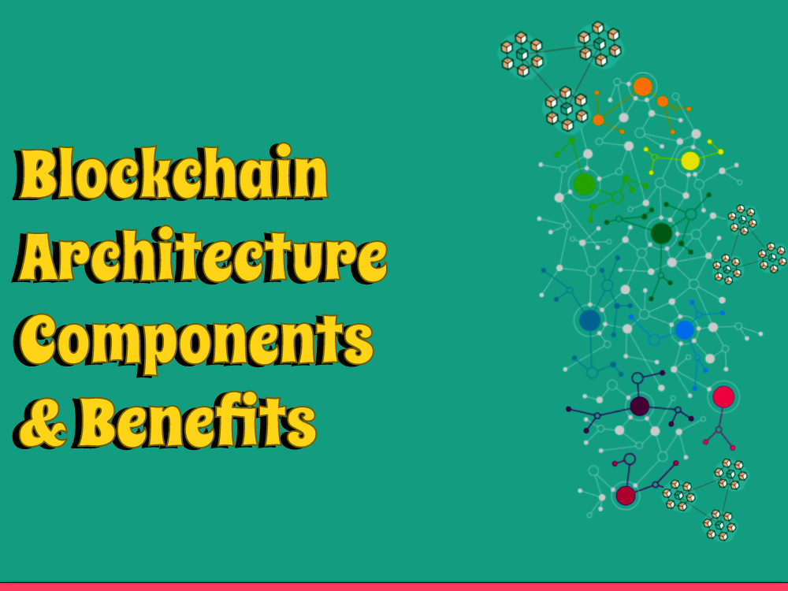

Blockchain technology is quickly becoming one of the most popular technologies used today. It is a decentralized, distributed ledger technology that provides transparency and security while keeping costs low. Blockchain technology uses a network of computers to verify transactions, which makes it an ideal choice for financial institutions, governments, and other organizations. In this article, we'll explore the components and benefits of blockchain architecture.
Blockchain innovation is comprised of a few parts that cooperate to make it a safe and straightforward innovation. Here are a portion of the key parts:
Distributed Ledger
A disseminated record is a data set that is put away on various PCs or hubs. Each hub has a duplicate of the information base, and any progressions made to the data set are checked and approved by different hubs. This makes it challenging for anybody to mess with the information, as any progressions made would need to be confirmed by the whole organization.
Cryptography
Cryptography is the utilization of numerical calculations to get information. Blockchain innovation utilizes cryptography to get exchanges and guarantee that main approved gatherings can get to the information. It additionally guarantees that the information can't be modified or erased.
Consensus Mechanism
The agreement system is a vital part of blockchain engineering. It is the interaction by which the organization of hubs settles on the legitimacy of an exchange. There are a few agreement components utilized in blockchain innovation, including Verification of Work (PoW), Evidence of Stake (PoS), and Designated Confirmation of Stake (DPoS).
Smart Contracts
Brilliant agreements are self-executing gets that are put away on the blockchain. They are set off consequently when certain circumstances are met. Shrewd agreements take into account complex exchanges to be executed naturally, without the requirement for mediators.
Blockchain innovation has a few advantages that pursue it an ideal decision for associations that require secure and straightforward exchanges. Here are a portion of the key advantages:
Security
Blockchain innovation is inconceivably secure, because of its utilization of cryptography and disseminated record innovation. It is essentially beyond the realm of possibilities for anybody to alter the information put away on the blockchain, settling on it an optimal decision for monetary foundations, states, and different associations that require secure exchanges.
Transparency
One of the critical advantages of blockchain innovation is its straightforwardness. Since each hub on the organization has a duplicate of the information base, it is not difficult to follow exchanges and guarantee that they are genuine. This settles on it an ideal decision for associations that require straightforwardness in their exchanges.
Cost Savings
Blockchain innovation can assist associations with setting aside cash by wiping out the requirement for middle people in exchanges. Savvy contracts take into account exchanges to be executed naturally, without the requirement for go-betweens, which can set aside associations time and cash.
Decentralization
Blockchain innovation is decentralized, and that intends that there is no focal power controlling it. This goes with it an optimal decision for associations that need to keep away from the control of a focal power.
Conclusion
Blockchain innovation is a safe and straightforward innovation that is great for associations that require secure and straightforward exchanges. It is comprised of a few parts, including disseminated record innovation, cryptography, agreement instruments, and savvy contracts. The advantages of blockchain innovation incorporate security, straightforwardness, cost reserve funds, and decentralization.
As additional associations perceive the advantages of blockchain innovation, we can hope to see it being utilized all the more generally later on.